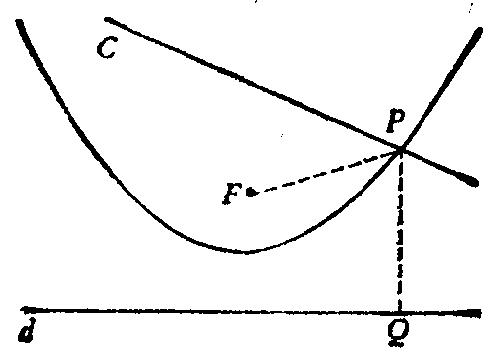

“点P”
“已知是什么?”
“直线c与d，与点F。”
“条件是什么?”
“P是直线c和抛物线的交点，抛物线的准线为d，焦点为F。”
“对。我知道你对抛物线了解不多。但我想你能够说出抛物线是什么?”
“抛物线是与焦点和准线距离相等的点的轨迹。”
“对。这定义你记得很对。那很好，但我们还必须利用它；回到定义去。
根据抛物线的定义，关于点P你有什么可说的吗?”
“P在抛物线上。因此，P与d和F的距离相等。”
“好，画张图。”
学生在图17上引入线 PF 与 PQ ，后者是P点向d所作垂线。
图17
“现在，你能重新叙述这个问题吗?”
“利用刚才引入的线，你能重新叙述这个问题的条件吗?”
“P是在线c上使 PF=PQ 的点。”
“好，请用文字说明： PQ 是什么?”
“P到d的垂直距离。”
“好，现在你能重新叙述这个问题吗?请用明确而又简洁的句子加以叙述。”
“在已知直线c上作点p，使它和已知点F及已知直线d等距离。”
“看看从原来的说法到你现在的说法之间有多大进步吧!对这问题，原来
的说法充满了不熟悉的专业术语，抛物线呀，焦点呀，准线呀；听起来未免有
点装腔作势和趾高气扬，而现在一点儿也没有那些不熟悉的专业术语了；你已
经使这个问题简练了。干得好!”
(4)消去专业术语。上面例子的工作结果就是消去了专业术语。我们从一
个包含某些专业术语(抛物线、焦点、准线)的问题的陈述开始，而最终找到了
没有这些术语的陈述。
为了消去一个专业术语，我们必须知道这个专业术语的定义；但仅知其定
义还不够，我们还必须利用定义。在上例中，只记得抛物线的定义是不够的。
决定性的一步是在图中引入直线 PF 和 PQ ，根据抛物线的定义这二者是相等的。
这过程是典型的。我们在问题的概念中引入适当的元素。我们在定义的基础上
建立所引入的元素之间的关系。如果这些关系完全表达了术语的含义，则我们